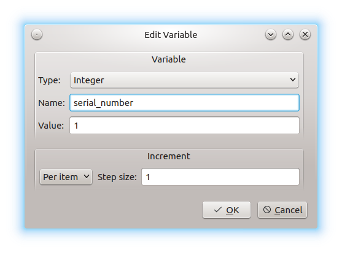
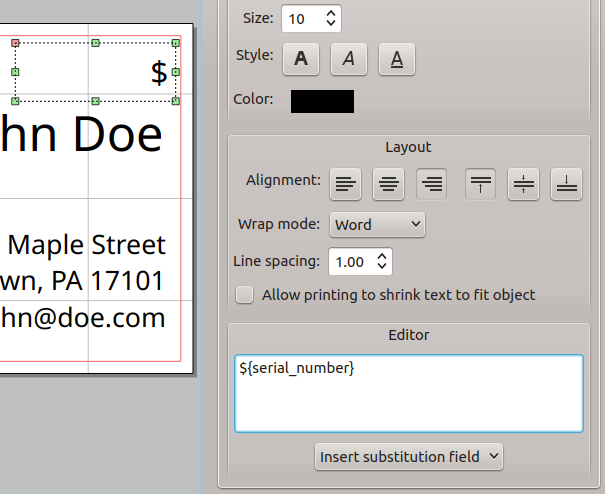
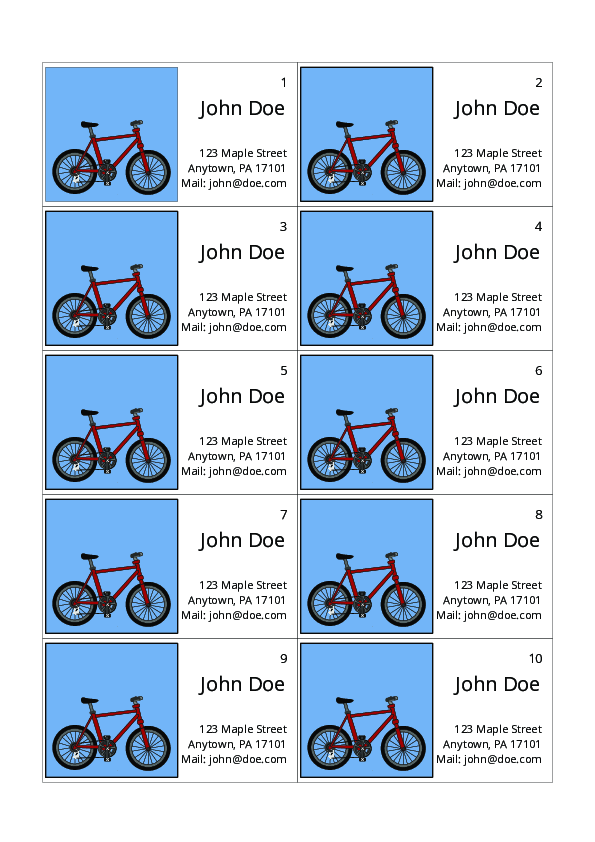

Creating User-Defined Variables
For example, user-defined variables can be used to print increment numbers. After opening a new project, you can set user-defined variables. Click on Variables in the toolbar on the left. At this time, no variables area defined. Click on Add at the bottom of the window. The Add variable window appears:

Now you can open the Type: drop-down menu to choose the type from String, Integer, Floating Point, and Color. After adding the desired name and value, click on the drop-down menu in the left bottom corner of the window to configure the incrementation. Note, the name must not contain spaces, only ASCII characters are allowed. After clicking on OK, the new variable appears in the list, and you can edit or delete it (or even add another one) by clicking on the buttons at the bottom of the window.
In our example we use a variable named serial_number and increment it by 1. To use it in a text object, use the editor field in the bottom right corner, click on Insert substitution field and then click on the desired variable. This looks as follows:

The resulting output now contains serial numbers:
